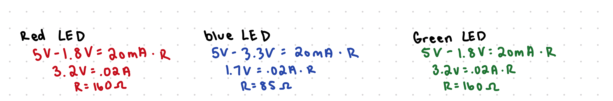

My Schematic:
For my schematic, the first one on the left represents the schematic for the photoresistor. For that, I used a resistor of 10k because we were told it's best practice to use large resistors for things such as buttons, photoresistors, etc...For my pins 11, 10, 9, I used a 100 resistor for the blue LED, and 220 resistor for the red and green LEDS. I chose that based off my calculations below and chose the ones closest to my calculations values.
My Firmware:
const int sensorPin = A0; // pin that the sensor is attached to
int sensorValue = 0; // the sensor value
int sensorMin = 1023; // minimum sensor value
int sensorMax = 0; // max sensor value
void setup()
{
pinMode(9, OUTPUT); //setting red LED
pinMode(11, OUTPUT); // setting white LED
pinMode(10, OUTPUT); //setting blue LED
Serial.begin(9600); // set data rate
digitalWrite(9, HIGH);
// calibrate during the first three seconds
while (millis() < 3000) {
sensorValue = analogRead(sensorPin); // reads the voltage of sensor (number between 0 and 1023)
// record the maximum sensor value
if (sensorValue > sensorMax) {
sensorMax = sensorValue;
}
// record the minimum sensor value
if (sensorValue < sensorMin) {
sensorMin = sensorValue;
}
}
// signal the end of the calibration period
digitalWrite(10, LOW); // turn off blue LED
digitalWrite(11, LOW); // turn off white LED
digitalWrite(9, LOW); // turn off red LED
}
void loop() {
sensorValue = analogRead(sensorPin); // reads the voltage of sensor (number between 0 and 1023)
Serial.print("My sensor value is ");
Serial.print(sensorValue);
Serial.println();
delay(500);
if (sensorValue > 650) { // if sensor value is about 650 (lights off/dark so high voltage)
// in case the sensor value is outside the range seen during calibration
// apply the calibration to the sensor reading
sensorValue = constrain(sensorValue, sensorMin, sensorMax);
sensorValue = map(sensorValue, sensorMin, sensorMax, 0, 255);
Serial.print("The analog version is ");
Serial.print(sensorValue);
Serial.println();
// fade the LED using the calibrated value:
analogWrite(10, sensorValue-20); // fade blue LED with sensor value (between 0 and 255)
analogWrite(11, sensorValue); // fade white LED with sensor value (between 0 and 255)
analogWrite(9, sensorValue); //fade red LED with sensor value (between 0 and 255)
} else { // if lights are on turn off all LEDS
digitalWrite(10, LOW); // turn off blue
digitalWrite(11, LOW); // turn off white
digitalWrite(9, LOW); // turn off red
}
}
In my code, in the setup there is a calibration period where the photoresistor picks up values to get a sense for high and low lighting in my current setting. Once that period is over, it'll check the voltage reading from the sensor, and if it's dark (my finger covering the sensor) then the LEDS will turn on, if it's light (I remove my finger) the LEDS will turn off.
An example output from my code would be "my sensor value is 747" (line break) "The modifed value is 180"
My Circut's operation:

When I cover the sensor with my finger all red, blue, and green LEDS in the rgb will turn on, turning the LED into what looks like a white light. When I remove my finger, all the LEDS will turn off.